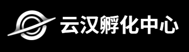
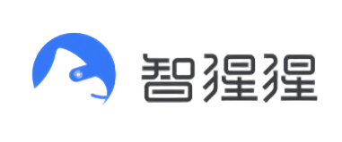
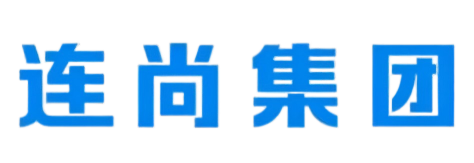

问题研究、方案设计、工程交付——三段全做。
不接标准需求，只做标准方案做不动的活。
啃非标、做深度，把每个问题当研究。
别人啃不动的，我们啃。
客户没意识到的提效点，我们去挖。
不是等需求，是去找。
嵌入工作流，润物细无声。
看不见地替他们干活。
我们的工作从一个问题开始。客户带来一个场景，我们先去理解这个场景——
不是问「你们想用 AI 做什么」，而是「这个场景里，AI 能 / 不能解决什么」。
研究透了，再决定接不接。接了之后，研究、方案、交付三段推进：研究阶段出方法论文档，方案阶段出技术方案 + 系统设计，交付阶段写代码、跑测试、接进客户的真实系统。
每一段都有可交付物，不是 PPT。
与我们一起探索 AI 落地的同路人。


